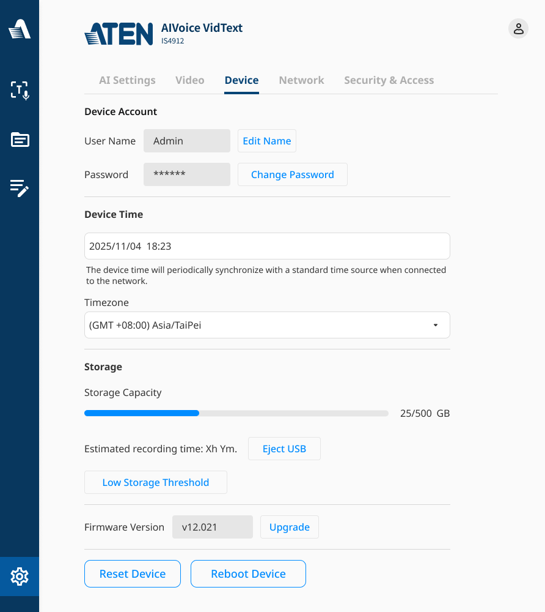

一、洞察市場真實痛點，讓既有會議室「無痛升級」AI
全球化協作下，跨語言會議需要同時做到「當下即時聽懂」與「會後完整留存」。然而市面上的瀏覽器擴充與雲端 SaaS，多半難以接進企業會議室既有的導播、ProAV 與音訊系統，更要求企業把機密會議內容交付陌生的第三方平台——這才是多數企業導入 AI 的真正門檻。我們沒有選擇再做一套更聰明的軟體，而是回到市場現場，找出一條讓既有場域「無痛具備 AI」的路：把 AI 能力做進一台可接入會議室訊號流的裝置。最關鍵的設計創新是「場域情境模板」——把專業客製留給系統整合商、把現場使用變成一鍵：整合商可預先配置語言、版型與字幕路數（如國際會議四路字幕），存成可重複套用的情境，現場人員只需挑選套用即可開會。
二、把客製留給整合商、把使用變成一鍵，從顧客情境出發
產品同時服務兩種顧客。對系統整合商，提供多功能、可自由設定的後台；對現場操作者與與會者，則把專業前置設定收斂為最少步驟：現場可純用前面板 OSD 操作、無須開電腦；大畫面顯示 QR Code，與會者掃碼即能在自己手機選擇語言、觀看即時字幕，並提供字級調整與深色模式，不必擠看大螢幕。面對機密會議，資料可走企業自有信任的雲端服務（如 Microsoft Azure）而非外流第三方；行動端可設密碼、會議紀錄可加密或以專用 USB 帶走、機台不留痕，讓便利與資安兼得。
三、軟硬整合的工程實力，深度接入既有影音體系
裝置於邊緣即時完成語音轉錄、翻譯與雙語字幕疊加，支援多種畫面版型（含子母畫面）與行動端多人同時觀看；完整的影音與控制 I/O（HDMI、UVC、RS232、RJ45 等）使其能乾淨地融入既有 ProAV 與環控訊號流，並與 ATEN 既有的會議系統整合。會議紀錄支援多語逐字稿並列、音檔回放與事後重新翻譯，兼顧即時體驗與會後價值。
當會議翻譯與紀錄都有雲端 SaaS，為什麼還要做一台裝置？
AIVoice VidText 把會議的「即時字幕翻譯」與「會議紀錄」整合進一台能接入場域的裝置：語音轉錄與翻譯直接串接微軟 Azure 語音服務，裝置本身負責影音接入、雙語字幕疊加輸出，以及會議紀錄與總結的產生。
產品定位刻意不正面搶純軟體市場，而是讓系統整合商（SI）能把 AI 無痛導入既有場域——並與 ATEN 長年經營的環控系統、專案影音（ProAV）設備整合成一套一鍵化的場域服務。
跨語言會議的痛點，不只是「翻得準」
跨語言會議要同時解決兩件事：當下聽得懂（即時翻譯字幕），以及會後留得下（逐字稿與總結）。市面上已有不少瀏覽器擴充與雲端 SaaS 在做，但放進企業會議室的真實場域，會遇到幾個結構性問題。
機密會議資料該交給誰
AI 轉錄與翻譯必然經過雲端——問題不在「要不要上雲」，而在「上誰的雲」。把可能含機密的會議內容交給陌生第三方 SaaS，是多數企業的合規與信任門檻。
接不進既有會議室硬體
研討會與活動現場早有導播、ProAV、音訊系統；一個「電腦＋SaaS」的方案，難以乾淨地接進既有訊號流。
場域差異大，一套軟體吃不下
小型會議、中大型研討會、活動導播，對畫面與字幕輸出的需求完全不同，難用單一軟體通包。
先看清楚對手，再決定要不要正面打
競品盤點分為兩類：純軟體（瀏覽器擴充／雲端 SaaS），以及有搭配硬體的方案。
vocol.ai Google Meet 擴充：即時逐字稿與翻譯、潤稿、情境式總結、雙人對話模式
interprefy 線上 AI Webinar 口譯
Vurbo.ai 會議轉錄／總結
會議狗 會議錄音／紀錄硬體
透明字幕 字幕顯示裝置
圖傳 影像傳輸
關鍵觀察
軟體新創在新功能與 UI 上迭代非常快；若以「一台電腦搭配總結 SaaS」的形態正面對決，硬體廠相對弱勢。因此產品策略選擇避開純功能戰，改以場域整合建立差異化。
定位：不打功能戰，打「整合進既有影音體系」的場域戰
- 功能與 UI 迭代快
- 免硬體、隨開即用
- 個人 / SOHO 場景方便
- 資料可走企業自有的信任供應商（如 Microsoft / Azure），不外流第三方 SaaS → 隱私可控
- 與 ProAV／RBS 會議系統／環控整合
- 具備實體 Port，可串接 ATEN 既有產品
- 可融入導播：輸出去背／乾淨畫面
- AI 模型參數可溝通調整
把模糊需求，收斂成可開發的規格
定位確定後，下一步是把「想做的事」翻成工程能接的規格：誰用、在什麼情境用、每個情境的畫面與聲音從哪進、字幕從哪出。這是整個專案投入最深的一塊。
目標客群（TA）與使用情境
中大型研討會
翻譯與會議紀錄系統；需與現場導播、ProAV、音訊系統整合。
小型會議 （後續排除）
PRD 初期列入，但情境盤點後判定不合理——更適合純翻譯／總結 SaaS，已刻意排除（見 05）。
活動公關公司
可融入既有導播體系；需要可去背／單色畫面，能搭配 OBS 等程式。
情境所需功能：輸入到輸出，硬體上要對得起來
中大型研討會（多語字幕與畫面融合輸出）
Remote Meeting → UVC-out 輸出「畫面＋字幕」給遠端、HDMI-out 輸出控制畫面給主持人；Hybrid Meeting → HDMI-out to ProAV 輸出「畫面＋字幕」（遠端＋現場），另出控制畫面給主持人。
一般會議（使用流程）
開始會議 → 輸入會議設定 → 錄音並顯示雙語字幕 → 會議結束 → 總結＋輸出會議紀錄，並為重點／代辦事項下 Tag；紀錄可存電腦、自動郵寄。
活動 / 導播
輸出可去背或單色畫面，融入既有導播流程、可搭配 OBS。
硬體功能（裝置層）
盤點情境：哪些是裝置的主場，哪些該交給軟體
把情境逐一畫出來，不只是展示功能，而是逐一判斷「這個場景，這台裝置到底是不是對的工具」。結論是：研討會與活動是主場，個人／小型會議則該讓給軟體。
研討會：裝置的主場
中大型研討會與活動現場早有導播與音訊系統，需求是把簡報畫面與多國語字幕乾淨地融合輸出——這正是裝置接進既有訊號流的價值所在。中大型場域常分開收音，影像與聲音須分開考量。


個人／小型會議：評估後刻意排除
小型會議在 PRD 初期也被列為 TA，但把情境攤開後判定為不合理情境：兩三人的小會議用不上裝置的軟硬整合，反而是一台電腦配翻譯／總結 SaaS 更輕、更合適。


兩條主流程
・為現場與遠端觀眾翻譯字幕
・單一 / 多講者 → 以不同麥克風辨別講者
・QA：觀眾持麥克風才收音、翻譯其發言
・結束 → 產生逐字稿與翻譯；字幕與現場（或導播）畫面合併為全程字幕影片；依重點 Tag 剪出精華
・帶出待討論事項、前次摘要與代辦 Check
・產生翻譯與字幕，可暫停 / 重開
・討論型態：單一報告 / 多人討論 / 多組同時發言
・結束 → 檢視修正逐字稿、產出總結 / 重點 / 代辦；輸出帶字幕影音；寄送指定成員或資料夾
把規格落地成一整套「網頁後台」
整個 web 介面是一套網頁後台，服務三端：後台（系統整合商與操作者）、OSD 螢幕輸出（現場大畫面）、手機（與會者個人裝置）。設計核心是一句話——把「客製」留給 SI、把「使用」變成一鍵。
一、網頁後台（控制端）


二、OSD 螢幕輸出（輸出端）
輸出端是疊在現場大畫面上的 OSD，可純用前面板按鍵操作、不必碰電腦。除了字幕，畫面上還能顯示一張 QR Code——與會者掃碼就能在自己手機看翻譯。


三、手機（與會者端）
掃碼後進入的手機畫面，是行動端輸出 UI：與會者用自己的裝置選想看的語言、看即時字幕，不必擠著看大螢幕；提供字級調整與深色模式，必要時以密碼保護存取。


介面如何反映架構
Container 與 Component：對外接口與內部模組
架構分兩層看：Container（整機對外的訊號與接口）與 Component（內部模組）。下圖是訊號從輸入、經 AI 運算、到輸出與控制的整體路徑。
聲音（Audio in）
（即時轉錄＋翻譯）
→ 疊加雙語字幕
→ 會議紀錄 / 總結
純字幕
影像 + 聲音
HDMI out / UAC-in
控制：前面板 + OSD（鍵盤 / 滑鼠）｜Website from IP（VK）｜RS232
實體連接埠
裝置系統管理

展場 DEMO：一條從開會到送出紀錄的完整動線
控制端：字幕 / 時間 Tag / 即時總結 → ④ 結束總結 → 發送紀錄 → 回播
展場 DEMO 以人聲與畫面（a Video / UVC-in）演示，控制方式為鍵盤、雙畫面展示。以下為實機於多語會議場景的實拍：


技術規格摘要
| 產品名稱 | ATEN AIVoice VidText |
|---|---|
| 型號 | IS4912 |
| 產品類型 | 會議即時翻譯與會議紀錄邊緣運算裝置（B2B 軟硬整合） |
| AI 引擎 | 串接 Microsoft Azure 語音服務（即時轉錄＋翻譯） |
| 影像 I/O | HDMI in／HDMI out、UVC-in |
| 音訊 I/O | UAC-in |
| 實體連接埠 | USB-A、USB-B、USB-C ×2、HDMI ×2、RJ45 ×2、Terminal block、Power |
| 輸出模式 | 字幕＋影像／純字幕／影像＋聲音 |
| 控制方式 | 前面板＋OSD、網頁後台（Website from IP）、RS232 |
| 字幕語言 | 多語並列（原文＋翻譯）；HDMI 字幕可同時多路輸出 |
| 行動端 | 與會者掃 QR 以個人裝置看字幕；最多 50 位同時連線 |
| 會議紀錄 | 逐字稿＋翻譯、音檔回放、重點 Tag、總結；可事後新增語言／重新翻譯 |
| 安全導出 | 密碼保護／專用 USB 帶走、機台不留痕；行動端可設密碼 |
| 系統管理 | 帳號權限、時間／時區同步、儲存與 USB 管理、韌體升級、Security & Access |
※ 上表部分數值取自介面截圖示例（如韌體 v12.021、儲存 500 GB、Ping 監控），實際出貨規格以官方規格書為準。
技術取捨與已知限制
規格的價值在「收斂」，不在「列功能」
難的不是想到功能，而是把不同場域的輸入到輸出在硬體上對齊、決定哪些不做（如 SOHO、遠端字幕交給既有遠端會議工具）。
軟硬整合是定位、也是限制
選擇「裝置」而非 SaaS，換到的是與 ProAV／導播體系整合的護城河；代價是迭代速度不如純軟體新創，必須靠場域整合取勝。
誠實面對待加強處
翻譯精準度仍受即時轉錄與斷句品質影響、且仍需連雲（無完全離線／地端方案）——這些在規格階段即標記為已知限制，而非假裝沒有。